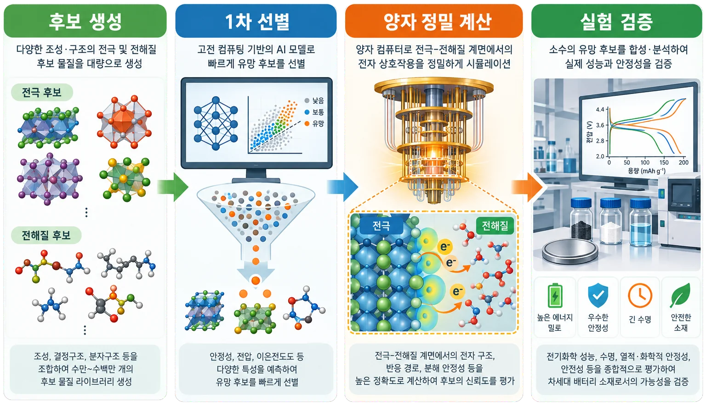
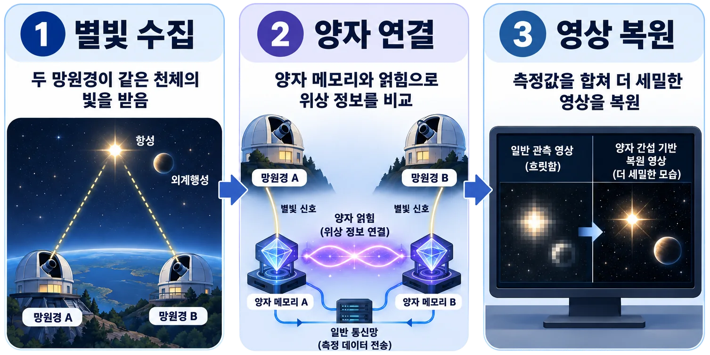
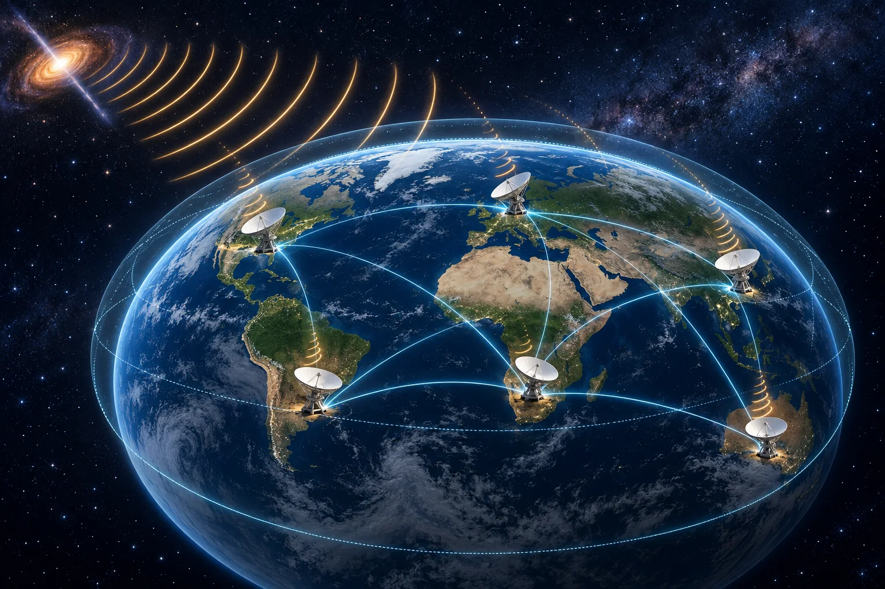
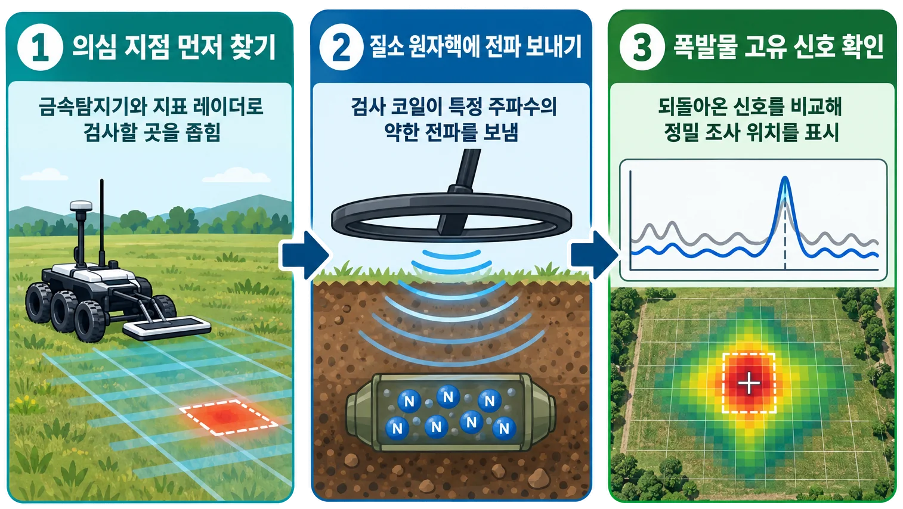
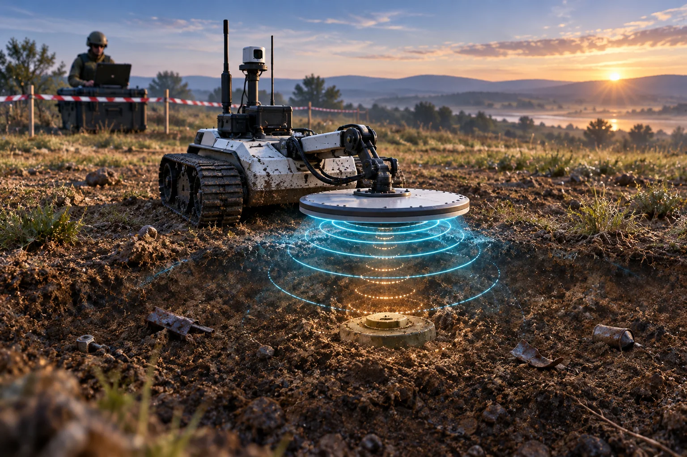

양자기술 활용 사례 Quantum technology in practice
아이디어톤 주제를 이해하는 데 도움이 되는 참고 사례입니다.
누가 어떤 문제를 겪고 양자 기술이 어떤 역할을 하는지 살펴보되, 그대로 따라 하기보다는 새로운 아이디어의 출발점으로 활용해 주세요.
Reference cases for the Ideathon prompt.
See who faces what problem and what role quantum technology plays, then use them as a starting point for your own idea rather than a template.
The detailed case write-ups are available in Korean only. Headings, summaries, notes and references are translated to help you find your way.
새로운 기술은 익숙한 도구를 모두 밀어내기보다, 기존 방식으로 부담이 큰 일을 나누어 맡으며 자리 잡는 경우가 많습니다. 양자 기술도 비슷합니다. 아래 사례 또한 기존 제품/서비스를 한 번에 대체하는 대신, 관측이나 계산에서 기존 방식의 부담이 큰 단계에 양자 기술을 연결하는 접근법을 취합니다. 읽을 때는 무엇을 입력해 어떤 결과를 얻는지, 그 결과가 실제 업무에 어떻게 이어지는지, 기존 방식과 무엇을 비교해야 하는지에 주목해 보세요.New technologies rarely push familiar tools aside all at once; more often they take over the steps that existing methods find hardest. Quantum technology is similar. The cases below don’t replace an existing product or service outright. Instead, they connect quantum technology to the observation or computation step where conventional methods struggle most. As you read, focus on what goes in and what comes out, how that result feeds into real work, and what it should be compared against.
NOTE아래 예시를 실제 아이디어톤에서 활용해도 되지만, 너무 유사할 경우 감점 요인이 될 수 있습니다.You may draw on these examples in the Ideathon, but an entry that is too similar may lose points.
TIPQiskit 구현은 선택 사항이지만, 검증과 설득력을 위해 간단하게라도 해 보기를 권장합니다. Python 등으로 핵심 가정을 확인하는 간단한 PoC(개념 증명)도 좋습니다.A Qiskit implementation is optional, but even a simple one is recommended to make your idea more verifiable and convincing. A simple proof of concept (PoC) in Python or another tool that checks your key assumption also works.
수많은 조합에서 배터리 소재 후보를 찾는 양자컴퓨터Finding battery-material candidates among countless combinations
한 줄 요약In one line배터리 연구팀이 실제로 합성할 후보를 줄이는 연구 지원 서비스A research-support service that narrows down which candidates a battery team actually synthesizes
OVERVIEW한눈에 보기At a glance

새로운 배터리 소재를 개발하려면 수많은 원소 조합과 원자 구조 가운데 실제로 합성할 후보를 골라야 합니다. 하지만 모든 후보를 직접 만들고 충전 및 방전 시험을 하기에는 많은 시간과 비용이 듭니다. 이 서비스는 계산으로 후보를 좁히고, 연구자가 실험할 물질과 순서를 정하도록 돕습니다.
01우리가 상상한 미래와 사용자Imagined future & users
계산 중 발생하는 오류를 스스로 바로잡을 수 있는 수천 개의 논리 큐비트를 갖춘 대규모 양자컴퓨터를 인터넷으로 이용할 수 있는 미래를 가정합니다. 논리 큐비트란 여러 개의 실제 물리 큐비트를 묶어 오류의 영향을 줄인 신뢰할 수 있는 계산 단위입니다. 주요 사용자는 새로운 배터리 소재를 개발하는 기업과 연구소입니다.
02제안하는 서비스와 이용 과정Proposed service & workflow
연구자가 후보 물질의 원소 구성과 원자 배열, 원하는 성능을 입력하면 AI와 일반 컴퓨터가 기존 실험 데이터와 계산 결과를 바탕으로 가능성이 낮은 후보를 먼저 걸러냅니다. 남은 후보 중 전자들의 복잡한 상호작용 때문에 계산하기 어려운 부분을 양자컴퓨터가 담당합니다. 서비스는 양자컴퓨터의 계산 결과를 기존 소재 계산과 결합해 예상 전압과 안정성, 특정 화학 반응이 일어날 가능성 등을 추정합니다. 연구자는 이러한 결과를 바탕으로 실제로 합성하고 시험할 후보의 우선순위를 정합니다.
03양자 기술의 적용과 역할Role of quantum technology
배터리 소재의 성질은 물질 속 전자들의 상태와 움직임에 크게 좌우됩니다. 그런데 여러 전자가 서로 영향을 주기 시작하면 고려해야 할 상태의 수가 급격히 늘어나 일부 물질은 일반 컴퓨터로 정확하게 계산하기 어렵습니다.
일반 컴퓨터는 전자들이 만들 수 있는 수많은 상태를 숫자로 표현해 저장하고 계산해야 합니다. 따라서 전자 수가 늘어날수록 저장해야 할 정보량이 폭발적으로 증가합니다. 반면 큐비트는 전자와 마찬가지로 중첩과 얽힘 같은 양자적 성질을 가지므로, 분자와 물질의 양자 상태를 보다 자연스러운 방식으로 표현할 수 있습니다. 적절한 알고리즘과 충분한 성능의 장비가 갖춰진다면, 일반 컴퓨터에서 계산하기 매우 어려운 전자구조 계산을 더 효율적으로 수행할 가능성이 있습니다.
양자컴퓨터는 주어진 원자 구조에서 전자들이 취할 수 있는 상태를 표현하고, 그중 에너지가 가장 낮은 안정한 상태와 화학 반응 전후의 에너지 차이를 계산하는 데 활용될 수 있습니다. 이러한 값은 배터리의 전압과 소재의 안정성, 이온이 이동하는 데 필요한 에너지, 원치 않는 화학반응이 일어날 가능성 등을 추정하는 기초 자료가 됩니다.
04현재 기술의 한계와 발전 가능성Current limits & outlook
현재 양자컴퓨터를 이용한 소재 계산은 작은 분자나 단순화한 소재 모형을 다루고, 필요한 큐비트 수와 계산 시간을 분석하는 연구 단계에 있습니다. 산업용 배터리 소재에서 양자컴퓨터가 기존 계산보다 더 정확하거나 시간과 비용 면에서 유리하다는 점은 아직 입증되지 않았습니다.
2022년 Physical Review A에 발표된 연구에서는 오류 정정 양자컴퓨터를 이용해 리튬 이온 배터리의 평형 전압, 이온 이동성, 열적 안정성을 계산하는 전체 알고리즘을 제안했습니다. 분석 대상과 정확도에 따라 약 2,400∼6,700개의 논리 큐비트와 매우 많은 연산이 필요한 것으로 나타났습니다.
또한 2024년 Nature Communications 연구에서는 소재 시뮬레이션에 필요한 양자회로의 계산량을 줄이는 방법을 제시했습니다. 이러한 연구는 계산에 필요한 자원이 줄어들고 있음을 보여 주지만, 실제 배터리 소재에서 양자 우위를 입증한 결과는 아닙니다.
기업들의 연구도 시작되고 있습니다. 양자컴퓨터 기업 Xanadu와 Volkswagen은 리튬 과잉 양극재를 계산하기 위한 양자 알고리즘을 연구했습니다. 2023년에는 원자핵과 안쪽 전자의 효과를 단순화해 표현하는 ‘유사퍼텐셜’을 이용해, 같은 목표 정확도에서 필요한 일부 양자 연산량을 기존 방식보다 약 1만 배 줄일 수 있다는 자원 분석을 발표했습니다. 미국 에너지부 산하 ARPA-E도 QC3 사업을 통해 양자컴퓨터를 화학·에너지 소재 연구에 적용하는 프로젝트를 지원하고 있습니다. 이 사업에 참여한 Xanadu는 배터리 내부의 원소 상태와 결함을 조사하는 X선 흡수분광법의 결과를 양자컴퓨터로 모사하는 기술을 개발하고 있습니다.
IonQ와 현대자동차는 리튬 화합물과 배터리 반응을 계산하기 위한 VQE 알고리즘을 공동으로 연구했습니다. LiH, H₂O와 리튬공기전지의 반응 생성물인 Li₂O를 실제 이온트랩 양자컴퓨터에서 최대 12개의 물리 큐비트로 계산했습니다. 이는 작은 분자를 대상으로 양자화학 계산 과정을 시험한 사례이며, 산업용 배터리 소재 전체를 계산한 것은 아닙니다.
작은 분자나 배터리 소재의 일부 영역은 수십∼수백 큐비트 규모의 모형으로 연구할 수 있습니다. 그러나 실제 양극재의 전압과 안정성을 정밀하게 계산하려면 수백∼수천 개 이상의 오류정정 논리 큐비트가 필요할 것으로 예상됩니다. 이를 구현하려면 실제 장비에서는 수십만∼수천만 개 이상의 물리 큐비트가 필요할 수 있습니다.
앞으로는 먼저 작은 분자와 단순한 소재 모형에서 양자 계산의 정확도와 비용을 기존 방법과 비교해야 합니다. 이후 화학 반응에 특히 중요한 전자와 원자 영역만 양자컴퓨터로 계산하고, 나머지는 일반 컴퓨터가 처리하는 혼합형 계산으로 범위를 넓힐 수 있습니다. 최종적으로는 AI의 후보 탐색, 양자컴퓨터의 전자구조 계산, 연구소의 합성 및 측정을 연결해 추천 결과가 실제 실험 성공률을 높이는지 확인해야 합니다.
05사업 및 운영 모델Business & operating model
분자와 물질의 성질을 계산하는 소프트웨어 기업이 서비스를 운영하고, 배터리 기업, 클라우드 양자컴퓨터 사업자, 실험 연구소와 협력할 수 있습니다. 계산 건수에 따른 이용료나 기업용 구독료를 받을 수 있으며, 주요 운영비에는 양자컴퓨터 사용료, 소프트웨어 개발비, 전문 인력 비용과 실험 검증비가 포함됩니다. 초기에는 소재 후보를 자동으로 결정하는 서비스보다, 연구자의 판단을 돕는 전문 계산·분석 서비스로 시작하는 것이 현실적입니다.
06Qiskit으로 확인하는 간단한 구현A small Qiskit experiment
Qiskit Nature와 VQE(변분 양자 고윳값 풀이) 알고리즘을 이용하면 수소와 같은 작은 분자의 가장 낮은 에너지를 계산할 수 있습니다. 원자의 종류와 거리를 입력하고, 양자 회로의 매개변수를 조금씩 바꾸면서 에너지가 가장 낮아지는 상태를 찾습니다. 계산 결과를 정확한 기존 계산과 비교하면서 양자화학 계산의 기본 원리를 확인할 수 있지만, 실제 배터리 소재 계산은 아니라는 한계를 밝힙니다.
멀리 떨어진 망원경을 하나처럼 연결하는 양자 망원경A quantum telescope that links distant observatories into one
한 줄 요약In one line여러 관측소가 받은 희미한 별빛의 정보를 양자망으로 비교하는 공동 관측 서비스A joint observation service that compares faint starlight received at several observatories over a quantum network
OVERVIEW한눈에 보기At a glance

01우리가 상상한 미래와 사용자Imagined future & users
도시와 국가를 잇는 양자망이 구축되고, 빛의 정보를 잠시 보관하는 양자 메모리를 관측소에서 사용할 수 있는 미래를 가정합니다. 주요 사용자는 외계 행성이나 별 주변의 미세한 구조를 관측하려는 천문대, 우주기관, 대학 연구팀입니다.
02제안하는 서비스와 이용 과정Proposed service & workflow
연구자가 관측 대상과 시간, 필요한 해상도를 신청하면 서비스가 여러 관측소의 망원경과 양자망을 함께 예약합니다. 각 망원경은 같은 천체에서 온 빛을 받고, 빛이 도착한 시각과 파동이 어느 지점에 와 있는지를 나타내는 위상 정보를 양자 메모리에 기록합니다. 분석 시스템은 여러 관측소의 측정값을 합쳐 한 곳의 망원경만으로는 구분하기 어려운 천체 구조를 영상으로 제공합니다.
03양자 기술의 적용과 역할Role of quantum technology
망원경의 직경이 클수록 더 많은 빛을 모으고, 가까이 있는 두 천체를 더 선명하게 구분할 수 있습니다. 그러나 거대한 망원경을 제작하는 데에는 기술적인 한계가 있고 막대한 비용이 듭니다. 전파 천문학에서는 이를 해결하기 위해 멀리 떨어진 여러 전파망원경의 관측 결과를 결합하는 방식을 사용합니다.
같은 천체에서 출발한 신호도 망원경의 위치에 따라 달라지는데, 여러 망원경에서 측정한 전파 신호를 합치면 간섭된 파동을 얻을 수 있습니다. 이렇게 간섭된 정보를 분석하면, 떨어진 망원경 사이의 거리만큼 지름이 큰 가상 망원경과 비슷한 분해능을 얻을 수 있습니다.

이 원리를 광학 망원경에도 적용하려면 각 관측소에 도착한 별빛을 한 곳으로 모아 간섭시켜야 합니다. 하지만 전파와 다르게 가시광선이나 적외선은 먼 거리를 이동시키기 어렵습니다. 희미한 별빛이 광섬유를 지나 먼 거리를 이동하는 동안 손실되고, 대기의 미세한 흔들림 때문에 빛의 정보도 흐트러질 수 있습니다.
양자망은 빛을 직접 먼 거리를 이동시키는 대신, 빛을 간섭시키는 데 필요한 ‘위상’ 정보만 양자 통신으로 전달합니다. 같은 별에서 출발한 빛이라도 두 관측소까지 이동한 거리가 다르면, 도착했을 때 파동의 마루와 골이 조금씩 어긋납니다. 이를 위상차라고 하며, 천체의 위치와 모습을 알아내는 데 필요한 정보가 담겨 있습니다.
이 위상차를 알아내기 위해 두 관측소는 관측 전에 서로 얽힌 양자 메모리를 준비합니다. 얽힌 양자 메모리는 멀리 떨어진 두 관측소가 함께 사용할 수 있는 ‘공동 측정 기준’과 같은 역할을 합니다. 별빛이 도착하면 각 관측소는 그 자리에서 별빛과 자신의 양자 메모리를 함께 측정합니다. 측정을 여러 번 반복해 두 관측소의 결과를 비교하면 별빛의 파동이 얼마나 어긋나 있었는지 알 수 있고, 빛을 간섭시킨 효과를 얻을 수 있습니다. 이렇게 양자 얽힘을 이용하면 별빛을 한 곳으로 직접 보내지 않고도 두 망원경이 하나의 간섭계처럼 작동할 수 있습니다. 다만 결과를 서로 전달하고 천체 영상으로 만드는 과정에는 인터넷이나 광통신 같은 일반 통신망도 필요합니다.
조금 더 자세히: 측정 결과에서 위상차를 알아내는 방법A closer look (Korean)
양자망은 관측 전에 두 관측소의 양자 메모리를 서로 얽힌 상태로 준비합니다. 별빛이 도착하면 각 관측소는 별빛과 자신의 양자 메모리를 함께 측정하되, 빛이 어느 관측소에 도착했는지는 드러나지 않도록 합니다. 그러면 별빛 자체를 한 곳으로 보내지 않아도 두 관측소에서 받은 빛의 위상차가 양자 메모리의 두 개의 공동 상태에 남습니다. 각 관측소의 결과만 보면 무작위처럼 보이지만, 두 결과가 같거나 다르게 나온 비율은 위상차에 따라 달라집니다. 따라서 측정을 여러 번 반복하고 두 관측소의 결과를 모아 비교하면 별빛이 얼마나 어긋나 있었는지 알아낼 수 있습니다. 양자 얽힘은 이렇게 떨어진 두 관측소가 하나의 간섭계처럼 공동 측정하도록 돕지만, 측정 결과를 즉시 전달하지는 않습니다. 결과를 모아 위상차를 계산하고 천체 영상을 만들려면 인터넷이나 광통신 같은 일반 통신과 데이터 분석이 반드시 함께 필요합니다.
04현재 기술의 한계와 발전 가능성Current limits & outlook
2019년에는 양자 메모리와 얽힘을 이용하는 망원경 배열이 이론적으로 제안됐습니다. 2026년 Nature 연구에서는 1.55km 떨어진 두 지점에서 양자 통신을 이용해 약한 빛의 위상차를 측정했습니다. 같은 해 Physical Review Letters 연구에서는 모의 별빛을 이용해 최대 20km 광섬유로 연결된 간섭계를 구현했습니다. 그러나 두 실험 모두 실제 별을 촬영해 천체 영상을 만든 것은 아닙니다.
실제 천문 관측에 사용하려면 먼 거리에도 얽힘을 빠르고 안정적으로 공급하고, 극도로 희미한 별빛의 정보를 잃지 않고 양자 메모리에 기록해야 합니다. 대기의 흔들림과 관측소 시계의 미세한 차이도 정확하게 보정해야 합니다. 앞으로는 기존 간섭계와 양자 방식의 신호 품질을 같은 조건에서 비교하고, 밝은 천체를 대상으로 실제 관측을 시도할 수 있습니다.
05사업 및 운영 모델Business & operating model
천문 관측망 운영사가 서비스를 관리하고 천문대, 양자 통신 사업자, 정밀시계 기업, 광자검출기 기업, 우주기관과 협력할 수 있습니다. 대학과 연구기관에는 관측 시간과 데이터 처리량에 따라 이용료를 받고, 국가 공동연구에는 장기 운영비를 지원받는 혼합 구조가 현실적입니다. 주요 비용은 관측소 장비 개조, 양자 중계망, 극저온 양자 메모리, 정밀한 시간 동기화와 유지보수입니다.
06Qiskit으로 확인하는 간단한 구현A small Qiskit experiment
두 관측소와 공유 얽힘을 3~4개의 양자큐비트로 단순화하고, 한쪽에 위상차를 넣은 뒤 측정 결과 사이의 관계가 어떻게 달라지는지 시뮬레이션할 수 있습니다. 입력은 두 관측소의 위상차, 출력은 측정값 사이의 상관관계입니다. 이는 실제 별빛이나 양자 메모리의 성능을 재현하는 구현이 아니라, 떨어진 센서가 얽힘을 이용해 하나의 값을 추정하는 원리를 보여 주는 작은 시험입니다.
폭발물의 고유 신호로 지뢰 의심 지점을 확인하는 양자 센서A quantum sensor that confirms suspected landmines by their explosive's own signal
한 줄 요약In one line넓은 구역을 먼저 훑고, 의심 지점에서 폭발물 성분의 신호를 확인하는 정밀 조사 서비스A precision survey service that sweeps a wide area first, then checks suspected spots for the signal of explosive compounds
OVERVIEW한눈에 보기At a glance

01우리가 상상한 미래와 사용자Imagined future & users
지뢰 제거 현장에서는 금속 조각이나 돌, 나무뿌리 때문에 경보가 자주 발생하고, 금속이 거의 없는 지뢰는 금속탐지기로 찾기 어렵습니다. 이 서비스는 넓은 지역에서 다른 센서가 표시한 의심 지점을 한 번 더 검사해 불필요한 굴착을 줄이는 장비입니다. 주요 사용자는 전문 지뢰 제거 기관, 정부 안전기관과 현장 조사 장비 업체입니다.
02제안하는 서비스와 이용 과정Proposed service & workflow
무인 조사 차량이 금속탐지기와 지표투과레이더로 넓은 지역을 먼저 살펴봅니다. 의심 지점이 발견되면 차량이 납작한 검사 코일을 지면 가까이에 놓고, 찾으려는 폭발물에 맞는 짧은 전파 신호를 보냅니다. 전파를 끈 뒤 폭발물 속 원자핵이 내는 매우 약한 신호를 여러 번 측정해 합칩니다.
분석 프로그램은 측정된 신호를 TNT, RDX, 질산암모늄 등 미리 저장한 폭발물 성분의 신호와 비교합니다. 전문 제거팀은 이 정보를 바탕으로 지뢰를 탐색할 위치를 결정합니다.
03양자 기술의 적용과 역할Role of quantum technology
이 기술은 병원에서 사용하는 MRI와 비슷한 원리에서 출발합니다. MRI는 몸속 수소 원자핵에 전파를 보내고, 원자핵이 반응하며 내는 미세한 신호를 측정합니다. 핵사중극공명(NQR)도 이처럼 원자핵의 양자적 성질을 이용하지만, 지뢰 탐지에서는 폭발물에 들어 있는 질소 원자핵의 신호를 찾습니다.
TNT와 RDX를 비롯한 여러 폭발물에는 질소가 들어 있습니다. 질소 원자핵은 아주 작은 팽이와 비슷한 ‘스핀’이라는 성질을 가지며 특정 주파수의 전파에만 강하게 반응합니다. 이때, 폭발물 결정 속에서 질소 원자핵이 느끼는 전기적 환경은 물질의 구조에 따라 달라지고, 그 결과 질소의 원자핵이 반응하는 전파의 주파수도 물질마다 달라집니다.
라디오가 정해진 주파수에서 특정 방송을 수신하는 것처럼, 센서는 TNT와 RDX 등 폭발물마다 다른 주파수의 조합을 찾습니다. 이렇게 얻은 ‘주파수 지문’을 미리 저장된 자료와 비교하면 특정 폭발물 성분이 존재하는지 확인할 수 있습니다.
04현재 기술의 한계와 발전 가능성Current limits & outlook
NQR을 이용한 폭발물 탐지는 수십 년 동안 연구됐으며 휴대형 시제품과 제한적인 현장 시험도 이루어졌습니다. 2015년 연구에서는 휴대형 장비가 야외에서 코일로부터 3cm 떨어진 질산암모늄 200g을 약 12초 만에 검출했습니다. 2019년 콜롬비아의 소규모 비공개 위치 시험에서는 얕게 묻은 질산암모늄 표적 5개 중 4개를 찾았지만, 지뢰가 없는 지점에서도 3번의 잘못된 경보가 발생했습니다. 이는 현장 적용 가능성과 함께 아직 남은 한계를 보여 줍니다.
NQR 신호는 매우 약하므로 같은 지점을 여러 번 측정해야 합니다. 주변의 무선 신호, 온도, 흙의 상태, 지뢰가 묻힌 깊이에 따라서도 결과가 달라집니다. 또한 금속 용기에 들어 있는 폭발물은 전파가 차단될 수 있고, 질소가 없거나 장비에 등록되지 않은 물질은 찾기 어렵습니다. 앞으로는 토양, 온도, 깊이를 바꾼 시험장에서 얼마나 폭발물을 잘 탐지하는지 검사하고, 기존 센서와 효율적으로 함께 사용할 수 있는 방법을 수립해야 합니다.

05사업 및 운영 모델Business & operating model
안전장비 기업이 검사기와 분석 소프트웨어를 개발하고, 지뢰 제거 기관, 정부 조달기관, 현장 로봇 기업과 협력할 수 있습니다. 장비 판매와 대여, 정기 점검, 물질별 신호 자료 갱신 및 현장 조사 계약으로 수익을 만들 수 있습니다. 인도적 지뢰 제거 사업에서는 국제기구나 정부의 공공 조달과 장기 유지보수 계약이 현실적인 고객 구조입니다.
06Qiskit으로 확인하는 간단한 구현A small Qiskit experiment
폭발물에 포함된 질소 원자핵은 특정 주파수의 전파를 받으면 양자 상태가 달라질 수 있습니다. 이를 단순하게 두 가지 상태만 있는 양자비트로 표현한 뒤, 전파의 주파수와 작용 시간을 바꾸어 가며 상태가 변할 확률을 계산합니다. 폭발물 성분이 반응하는 주파수에 가까워질수록 변화가 크게 나타나고, 잡음이 많아지면 뚜렷했던 반응이 흐려지는 모습도 비교할 수 있습니다. 다만 이는 탐지 원리를 이해하기 위한 간단한 모형이며, 실제 흙 속 신호의 세기나 탐지 장비의 성능을 그대로 재현하지는 않습니다.
이제 새로운 문제와 사용자를 떠올려 볼 차례입니다.Now, imagine a new problem and a new user.
세 사례는 출발점일 뿐입니다. 진행 방식과 제출 형식은 아이디어톤 안내에서, 궁금한 점은 FAQ나 SQRT 문의로 확인하세요.These cases are only a starting point. See the Ideathon overview for format and submission details, or check the FAQ and contact SQRT.